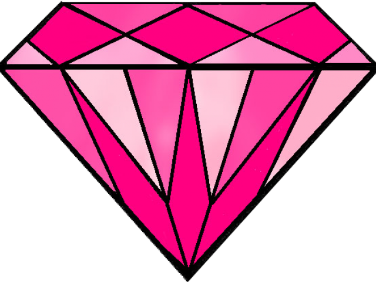

My Work
Crystals Collector!
Totally Trivial Trivia

"Hello, World!" I am a dynamic professional with a passion for entrepreneurship, Spanish & life-long learning. After several years studying earth science, exploring fossils & working in higher education, I found my calling in tech. I am currently training to become a Full Stack Web Developer at the Coding Boot Camp at UCLA Extension. I enjoy creating, problem solving, & learning developer tools & technologies. My mission is to use my skills in programming & Spanish to help individuals, teams & organizations with customized web solutions.
My diverse background has equipped me well in business, critical thinking, and communication. Some of my favorite hobbies include international travel, visitng museums, architectural and historical tours, practicing Spanish, and running.
> I lived and studied in the UK twice
> My favorite city is London
> I found trilobite fossils in both Southern California and Germany
> I've experienced absolute darkness inside of an old Welsh Coal Mine
> I love muscle and classic cars
> My favorite music is from the 60's up until the 90's
> I have a formidable collection of souvenir plush animals
> I was a pretty strong sprinter back in the day
Dominica.Patterson@gmail.com
818 . 220 . 8303